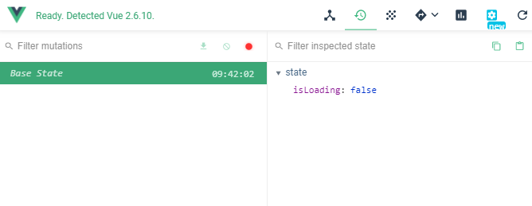
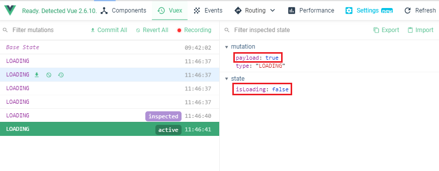

在 Vuex 中，一直重複提到一個很重要的觀念就是 mutations 只負責同步的行為，非同步的行為如 AJAX 與 setTimeout 等都是由 actions 來負責
錯誤的開發方式
以下分別示範兩種 Vuex 中 錯誤 的開發方式
mutations 中設定 “非同步事件”
如果在 mutations 中建立非同步事件，透過開發者工具會發現 mutations 與更改的變數 state 會無法對上，進而造成除錯上的困難
1 | mutations: { |

如果有非同步的行為應該直接加在 actions 中
1 | actions: { |
mutations 外修改變數狀態
如果在 mutations 以外修改變數狀態也會造成結果無法呈現，透過開發者工具察看也會發現沒有偵測到狀態
1 | actions: { |

嚴謹模式
在使用 Vuex 開發時，加上以下指令就會在不符合規範時跳出錯誤提示
1 | export default new Vuex.Store({ |